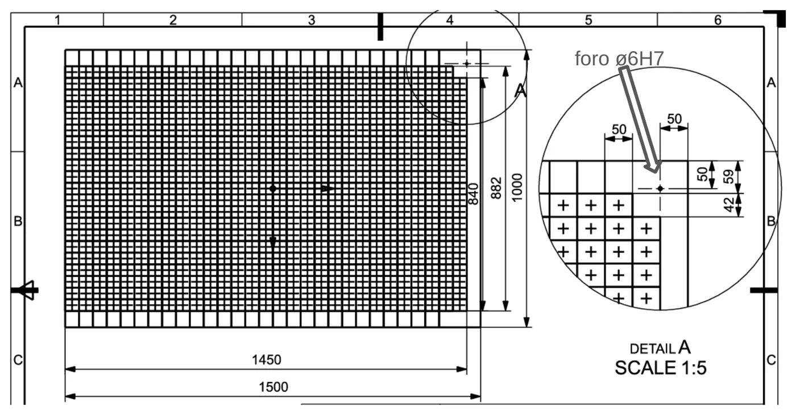
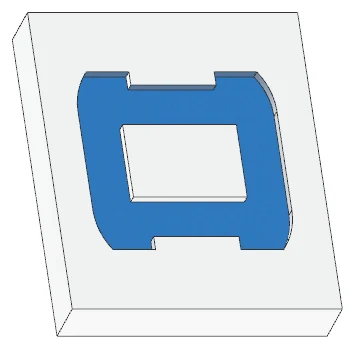
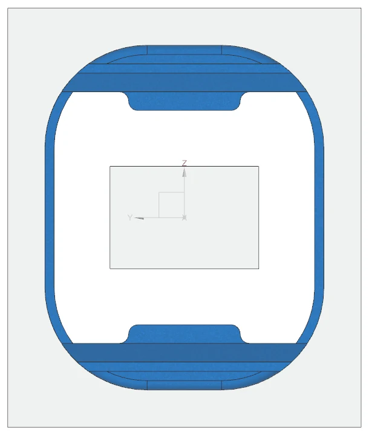
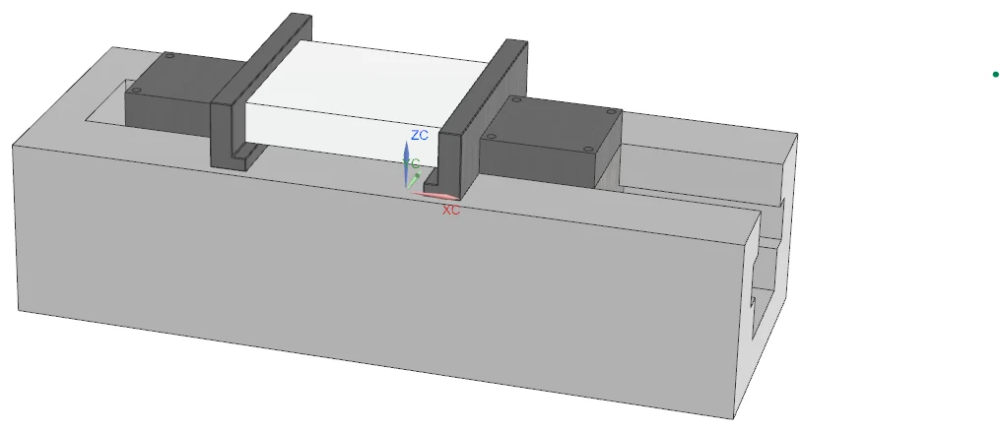
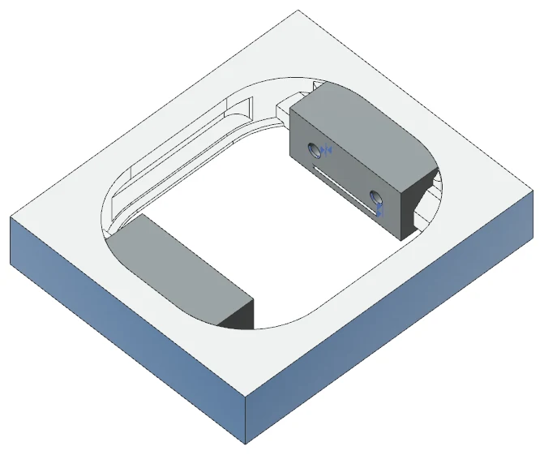
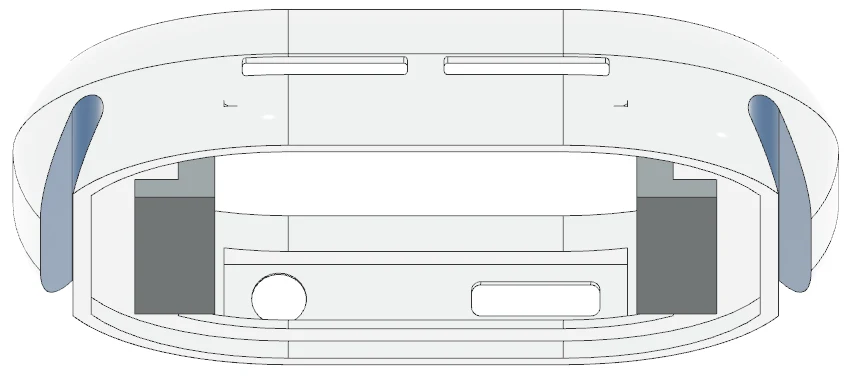
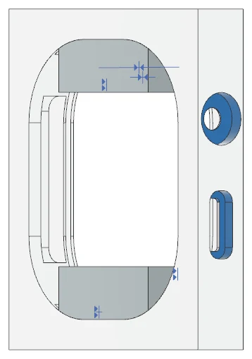
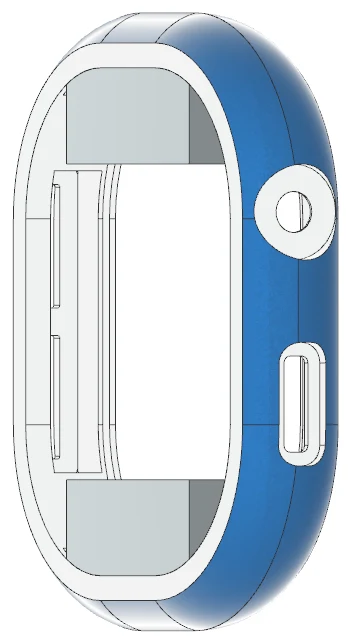
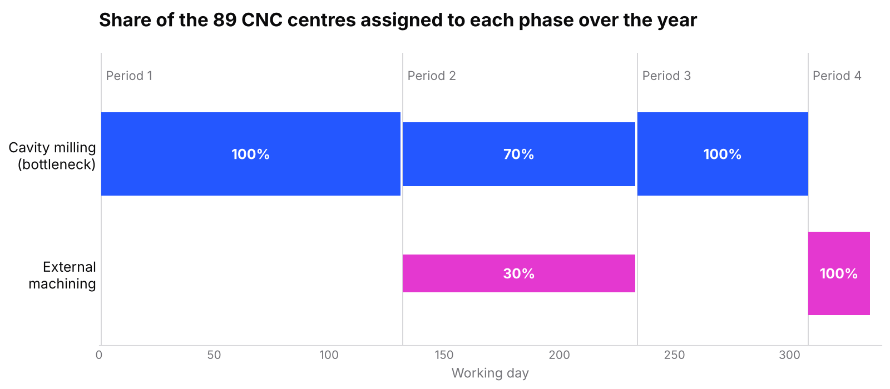

Manufacturing
Apple Watch case: production study
Reverse-engineered an aluminium smartwatch case and designed the machining line to make one million of them a year — process plan, tooling, capacity and cost.
- cases per year
- 1,000,000
- blanks per panel
- 608
- CNC machines sized
- 89

- Rebuilt the case geometry from public drawings and teardown photos; assigned functional tolerances.
- Planned the route from 10 mm Al 7005-T6 sheet to a finished part: laser blanking, cavity and external milling, vibratory finishing.
- Sized the line for 1M parts/year and resolved a milling bottleneck by scheduling the fleet over four periods.
- Siemens NX
- GD&T
- Process planning
- MRR & cutting-power calcs
- Taylor tool life
- Python
01
Geometry and tolerances
Only the external surfaces are public, so we inferred the internals — battery cavity, crown and button seats, microphone and strap slots — from teardown photos, then assigned tolerances by function: ±0.01 mm on precision fits, ±0.1 mm on structural walls, and a Ø0.05 mm concentricity on the Ø3 H7 crown bore.


02
Process route
From raw sheet to finished case, step by step. Use the arrows to go through it.
PROCESS

STEP 01
Sheet to panels
A 3000 × 1500 × 10 mm Al 7005-T6 sheet is laser-cut (AMADA REGIUS fibre laser) into three 1500 × 1000 mm panels of 608 blanks each; Ø6 H7 holes locate each panel on the machine.

STEP 02
Roughing the underside
With the panel faced, the underside of every blank is roughed out while the blanks are still joined — the panel itself is the fixture.

STEP 03
Internal cavity
The internal cavity is milled from the other side, leaving the case ring and the seats for the display and internal parts.

STEP 04
Separation and fixturing
The blanks are cut out of the panel and each one is clamped in a custom vise designed for the case, so the external surfaces can be reached.

STEP 05
External contour
The external profile is machined on the single part, holding ±0.01 mm on the critical outer dimensions.

STEP 06
Strap slots and side grooves
Strap attachment slots and side grooves need small tools — one reason for the DATRON MLCube and its 60,000 rpm spindle.

STEP 07
Crown, button and microphone features
Digital Crown bore (Ø3 H7, Ø0.05 concentricity), side button pocket and microphone holes are machined last.

STEP 08
Finished case
Vibratory tumbling with low-aggressiveness plastic cones takes the surface from Ra 0.8 to the Ra 0.4 µm target without rounding the edges (30-minute cycle).

STEP 09
Sizing the line
1,000,000 parts a year needs 1 laser cutter, 89 CNC centres and 1 tumbler. Cavity milling is the bottleneck, so the fleet is reassigned between phases over four periods instead of buying more machines.
03
Capacity, tooling and cost
For every operation we computed removed volume, material-removal rate and cutting power, and from those the machining time and energy. Tool life came from Taylor's law (literature values for carbide on aluminium, n = 0.25, C = 900 m/min), which set how many parts each tool makes before it's changed. A cost model rolls machine amortisation, maintenance, energy and tooling into a cost per part.
04
Scope
An academic study of a public product, not work for Apple: internal geometry, tolerances, machine prices and tool-life constants are our assumptions and were not validated with machining trials.